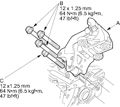
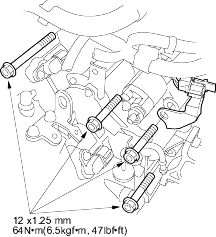
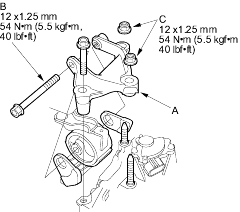
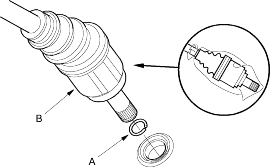

- Attach the transmission to the engine, then install the rear mount/bracket (A) with the mount bracket bolts (B) and the transmission housing mounting bolt (C).

- Install the transmission housing mounting bolts.

- Install the transmission mount bracket (A). Tighten the bolt (B) loosely and tighten the nuts (C) to the specified torque, then tighten the bolt to the specified torque.

- Install new set rings (A) on the left and right driveshafts (B).

- Install the right and left driveshafts (see page 16-18). While installing the driveshafts in the differential, be sure not to allow dust or other foreign particles to enter the transmission.
NOTE:
- Clean the areas where the driveshafts contact the transmission (differential) with solvent or carburettor cleaner and dry with compressed air.
- Turn the right and left steering knuckle fully outward and slide the driveshafts into the differential until you feel its set ring engage the side gear.